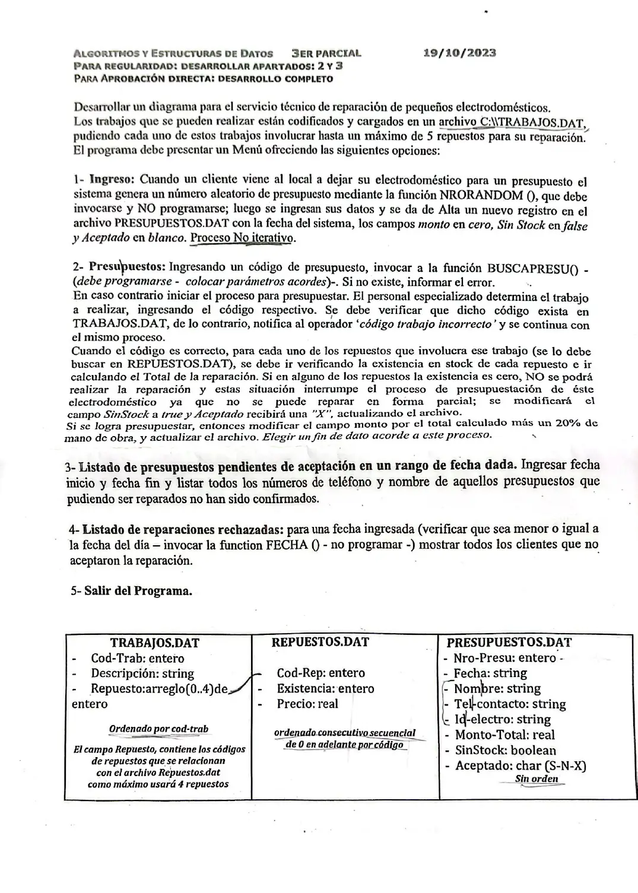

3° parcial, 19/10/2023 (Reparación de electrodomésticos)
3° parcial y final, 19/10/2023
Enunciado


Propuesta de respuesta
Respuesta no verificada. La propuso Luta Studios con inteligencia artificial y ningún docente la revisó. Puede tener errores.
La hoja pide un diagrama. Va en Chapin, el de la materia. Va un diagrama por módulo, con su declaración de variables arriba, y primero el del programa principal. Si un diagrama no entra en la pantalla, tocalo para verlo completo. Después de los diagramas está el mismo algoritmo en Python, para que lo puedas probar. Las sentencias de archivos van con las palabras reservadas de Python (open, pickle.load, pickle.dump, seek, tell). Los textos se completan con ljust para que los registros midan lo mismo. El tamaño de un registro sale de tell() después de leer el primero.
Menú
Búsquedas
1- Ingreso
2- Presupuestos
3- Listado de presupuestos pendientes de aceptación
4- Listado de reparaciones rechazadas
El mismo algoritmo en Python
Es el programa que se probó, con las mismas sentencias y en el mismo orden que las cajas. Cada Leer del diagrama es un input, convertido a int o float según la declaración, y cada Mostrar es un print.
import os
import pickle
from datetime import date
class Trabajo:
def __init__(self):
self.codTrab = 0
self.descripcion = ""
self.repuesto = [-1]*5 # -1 en los lugares sin repuesto
class Repuesto:
def __init__(self):
self.codRep = 0
self.existencia = 0
self.precio = 0.0
class Presupuesto:
def __init__(self):
self.nroPresu = 0
self.fecha = ""
self.nombre = ""
self.telContacto = ""
self.idElectro = ""
self.montoTotal = 0.0
self.sinStock = False
self.aceptado = " "
# afTrabajos, afRepuestos, afPresupuestos: str
# alTrabajos, alRepuestos, alPresupuestos: archivo
# tamTrab, tamRep: int
afTrabajos = "C:\\TRABAJOS.DAT"
afRepuestos = "C:\\REPUESTOS.DAT"
afPresupuestos = "C:\\PRESUPUESTOS.DAT"
alTrabajos = open(afTrabajos, "rb")
alRepuestos = open(afRepuestos, "rb")
alPresupuestos = open(afPresupuestos, "r+b")
pickle.load(alTrabajos)
tamTrab = alTrabajos.tell()
pickle.load(alRepuestos)
tamRep = alRepuestos.tell()
def BUSCAPRESU(nro):
# Secuencial: PRESUPUESTOS.DAT no tiene orden. Devuelve el byte donde empieza o -1
# nro, tam, pos, p: int
# reg: Presupuesto
tam = os.path.getsize(afPresupuestos)
pos = -1
alPresupuestos.seek(0, 0)
while alPresupuestos.tell() < tam and pos == -1:
p = alPresupuestos.tell()
reg = pickle.load(alPresupuestos)
if reg.nroPresu == nro:
pos = p
return pos
def BUSCA_TRABAJO(cod):
# Dicotómica: TRABAJOS.DAT está ordenado por código. Devuelve el nro de registro o -1
# cod, inicio, fin, medio, pos: int
# reg: Trabajo
inicio = 0
fin = os.path.getsize(afTrabajos) // tamTrab - 1
pos = -1
while inicio <= fin and pos == -1:
medio = (inicio + fin) // 2
alTrabajos.seek(medio * tamTrab, 0)
reg = pickle.load(alTrabajos)
if reg.codTrab == cod:
pos = medio
elif cod < reg.codTrab:
fin = medio - 1
else:
inicio = medio + 1
return pos
def INGRESO():
# hoy: date
# reg: Presupuesto
reg = Presupuesto()
reg.nroPresu = NRORANDOM()
while BUSCAPRESU(reg.nroPresu) != -1:
reg.nroPresu = NRORANDOM()
hoy = date.today()
reg.fecha = hoy.strftime("%Y%m%d")
reg.nombre = input("Nombre: ").ljust(30, " ")
reg.telContacto = input("Teléfono de contacto: ").ljust(15, " ")
reg.idElectro = input("Electrodoméstico: ").ljust(20, " ")
reg.montoTotal = 0.0
reg.sinStock = False
reg.aceptado = " "
alPresupuestos.seek(0, 2)
pickle.dump(reg, alPresupuestos)
alPresupuestos.flush()
print("Número de presupuesto:", reg.nroPresu)
def PRESUPUESTAR():
# nro, pos, cod, posT, i: int
# total: float
# reg: Presupuesto
# trab: Trabajo
# rep: Repuesto
# Fin de datos: presupuesto 0
nro = int(input("Nro. de presupuesto (0 para terminar): "))
while nro != 0:
pos = BUSCAPRESU(nro)
if pos == -1:
print("No existe ese presupuesto")
else:
alPresupuestos.seek(pos, 0)
reg = pickle.load(alPresupuestos)
cod = int(input("Código de trabajo: "))
posT = BUSCA_TRABAJO(cod)
while posT == -1:
print("código trabajo incorrecto")
cod = int(input("Código de trabajo: "))
posT = BUSCA_TRABAJO(cod)
alTrabajos.seek(posT * tamTrab, 0)
trab = pickle.load(alTrabajos)
total = 0
i = 0
while i < 5 and not reg.sinStock:
if trab.repuesto[i] != -1:
alRepuestos.seek(trab.repuesto[i] * tamRep, 0)
rep = pickle.load(alRepuestos)
if rep.existencia == 0:
reg.sinStock = True
reg.aceptado = "X"
else:
total = total + rep.precio
i = i + 1
if reg.sinStock:
print("Falta un repuesto: no se puede reparar")
else:
reg.montoTotal = total + total * 20 / 100
print("Monto del presupuesto:", reg.montoTotal)
alPresupuestos.seek(pos, 0)
pickle.dump(reg, alPresupuestos)
alPresupuestos.flush()
nro = int(input("Nro. de presupuesto (0 para terminar): "))
def PENDIENTES():
# desde, hasta: str
# tam: int
# reg: Presupuesto
desde = input("Fecha de inicio (aaaammdd): ")
hasta = input("Fecha de fin (aaaammdd): ")
tam = os.path.getsize(afPresupuestos)
alPresupuestos.seek(0, 0)
while alPresupuestos.tell() < tam:
reg = pickle.load(alPresupuestos)
if reg.fecha >= desde and reg.fecha <= hasta and reg.montoTotal > 0 and not reg.sinStock and reg.aceptado == " ":
print(reg.telContacto, reg.nombre)
def RECHAZADAS():
# f: str
# tam: int
# reg: Presupuesto
f = input("Fecha (aaaammdd): ")
while f > FECHA():
f = input("Tiene que ser menor o igual a hoy: ")
tam = os.path.getsize(afPresupuestos)
alPresupuestos.seek(0, 0)
while alPresupuestos.tell() < tam:
reg = pickle.load(alPresupuestos)
if reg.fecha == f and reg.aceptado == "N":
print(reg.nombre, reg.telContacto, reg.idElectro)
# Programa principal
# opcion: int
opcion = 0
while opcion != 5:
print("1- Ingreso")
print("2- Presupuestos")
print("3- Listado de presupuestos pendientes de aceptación")
print("4- Listado de reparaciones rechazadas")
print("5- Salir del programa")
opcion = int(input("Opción: "))
while opcion < 1 or opcion > 5:
opcion = int(input("Opción inválida: "))
match opcion:
case 1:
INGRESO()
case 2:
PRESUPUESTAR()
case 3:
PENDIENTES()
case 4:
RECHAZADAS()
alTrabajos.close()
alRepuestos.close()
alPresupuestos.close()Respuesta no verificada. Puede tener errores.
Se armó con la hoja del examen y la página del 3° parcial y final (registros como clase, recorrer, búsquedas, actualizar un registro y alta). Las operaciones de archivos siguen las diapositivas de merge y corte de control. El Chapin sigue la forma de las diapositivas del examen de Historia Clínica de 2019. REPUESTOS.DAT se lee por posición relativa, porque es consecutivo desde 0 por código.
Quedó en duda: Los lugares vacíos del arreglo de repuestos se marcan con -1, porque el 0 es un código válido. La hoja no dice cómo se marcan. La hoja dice hasta 5 repuestos en el texto y como máximo 4 en el cuadro del archivo. El arreglo es de 5. La fecha se guarda como aaaammdd para poder comparar rangos como texto. La hoja no da el formato, y FECHA() tiene que devolver lo mismo. Si NRORANDOM() devuelve un número que ya existe, se pide otro. Pendientes son los que tienen monto, no les falta stock y siguen con Aceptado en blanco. Ningún punto carga la S o la N de la aceptación. El monto se inicia en 0.0 y no en 0, porque en Python un entero y un real se graban con distinto tamaño. En Python, pickle graba un entero menor que 256 en menos bytes que uno más grande. Por eso dos trabajos con distinta cantidad de lugares en -1, o con códigos de distinto tamaño, miden distinto. Entonces el registro deja de coincidir con la posición que calcula el programa. El material pide registros del mismo tamaño y solo muestra cómo lograrlo con textos (ljust). Las pruebas se hicieron con datos que no cambian el tamaño. Las diapositivas de la materia no muestran en Chapin la lectura de datos ni la selección múltiple. Acá van como Leer y como Según, con una columna por caso.
¿Cómo te fue?
Marcá cada tema del examen.
- ArchivosSecuencial y de acceso directo, en 3° parcial y final
- FuncionesFunciones que el enunciado pide invocar, en 2° parcial
- BúsquedaBúsqueda secuencial, en 2° parcial